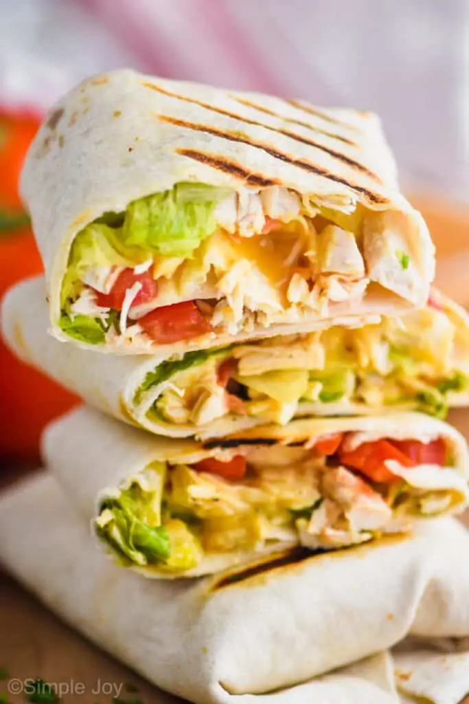

Chicken Wrap

Description
This Chicken Wrap recipe is such an easy weeknight dinner.
Done in about 25 minutes and delicious, these will become a regular meal in your house.
- Cooked Chicken
- Romaine Lettuce
- Roma Tomatoes
- Cover the chicken breast completely with water and bring to a boil.
- Simmer for 4 to 10 minutes. The thickness of the breasts will determine how long you need to cook it.
- Cook until it reaches an internal temperature of 165 degrees.
I love cooking mine with an instant read thermometer in it. The one linked has a long cord so it can stay in the whole time it is cooking and alert you when the chicken is done.